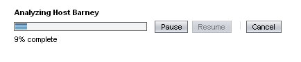
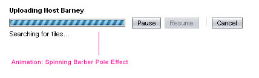
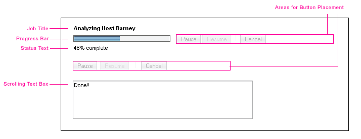
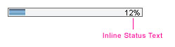
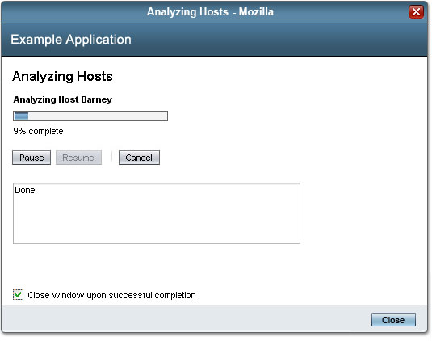
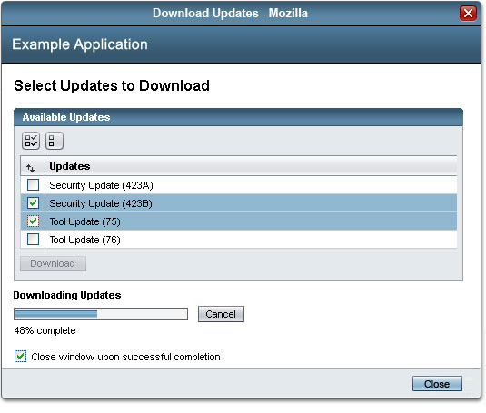
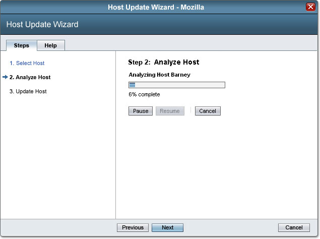
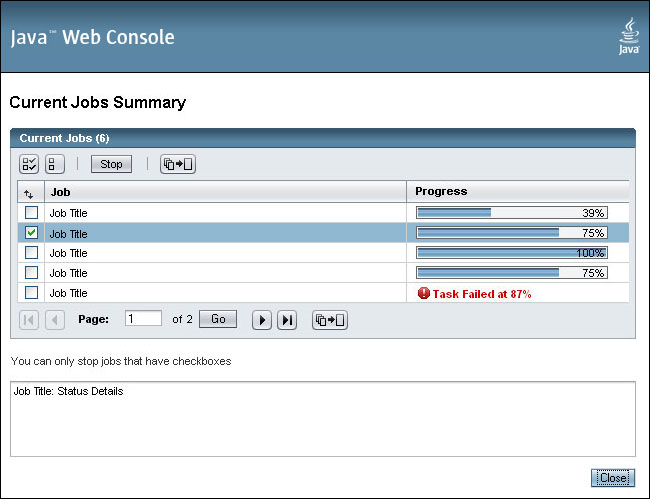

Sun Web Application Guidelines - Version 4.1
Sun Web Application Guidelines - Version 4.1
|
|
|
| [ Table of Contents | 0 Revision History | 1 Introduction | 2 Visual Design | 3 Windows and Pages | 4 Mastheads | 5 Top-Level Navigation | 6 Content Area | 7 Simple Elements | 8 Complex Elements | 9 Tables | 10 Topology | 11 Contextual Help | 12 Search | 13 Wizards | 14 Alerts and Messages | 15 Progress Indicators | 16 Alarms and Status Indicators | 17 Login Page | 18 Version Page | Appendices ] |
How To Use These Guidelines - An Introduction
15.1.1 Determinate Progress Bar
15.1.2 Indeterminate Progress Bar
15.2 Progress Indicator Elements
15.3 Progress Indicators in Context
15.3.1 Busy Indicator - Inline
15.3.2 Progress Bar in a Pop-Up Window
15.3.3 Progress Bar in a Wizard
15.3.4 Progress Bars in a Table
15.5 Jobs Running Display in a Main Window Masthead
Progress indicators are useful for communicating that a job is in-process. This feedback, at minimum, reassures the user that something is happening and, ideally, also lets the user know approximately how long the job will take to complete.
 Once the user has started a job, a progress indicator should be presented for that job.
Once the user has started a job, a progress indicator should be presented for that job.
The 4.0 Progress Indicator component consists of three progress indicator designs: Determinate Progress Bar, Indeterminate Progress Bar and a Busy indicator.
The Determinate and Indeterminate Progress Bar indicators include graphical bars to demonstrate job progress. The Determinate Progress Bar is used to represent the percentage of a given job that has been completed. The Indeterminate Progress Bar is used when estimates of job completion cannot be provided, yet the job is being performed. Determinate and Indeterminate Progress Bar indicators may also include a textual description of the job, a textual description of the current job status, and any related controls such as Pause, Resume and/or Cancel buttons to halt the associated job.
The Busy indicator is not a bar-type indicator, but a circular animation. It is used when space is very constrained, and is suitable for demonstrating progress for events which cannot be synchronized to the backend process.
 Use a Determinate or Indeterminate Progress Bar when a job might take longer than six seconds to complete.
Use a Determinate or Indeterminate Progress Bar when a job might take longer than six seconds to complete.
 If the context allows, consider presenting a Busy progress Indicator when a job takes less than six seconds to complete and some progress feedback is required.
If the context allows, consider presenting a Busy progress Indicator when a job takes less than six seconds to complete and some progress feedback is required.
The Determinate Progress Bar provides feedback to the user that a job is in-process and indicates approximately how long it will take to complete. It should be used for a single measurable job composed of one or more steps.
Progress is visually represented by a horizontal progress bar which progressively fills a trough area. The progress bar fills the trough in proportion to the job progress. Corresponding status text can be presented with the progress bar to offer detailed information about the job status. Status text offers narrative details regarding the percentage of job completion and estimated time remaining. Button controls can be included for actions supported by the application. For details see 15.2 Progress Indicator Elements.
The Determinate Progress Bar may be presented in a pop-up window, or inline within a component or page. For more information please see 15.3 Progress Indicators in Context.
Example: Determinate Progress Bar

Basic Interaction:
 Use the Determinate Progress Bar to represent the percentage of completion for a given job.
Use the Determinate Progress Bar to represent the percentage of completion for a given job.
 The progress indicator component is AJAX-enabled. It will poll the backend every three seconds, dynamically refreshing the component presentation.
The progress indicator component is AJAX-enabled. It will poll the backend every three seconds, dynamically refreshing the component presentation.
 Progress indication should be based upon real, measurable progress, when at all possible. Examples of measurable progress include steps completed, data moved/written, specific events, and so on.
Progress indication should be based upon real, measurable progress, when at all possible. Examples of measurable progress include steps completed, data moved/written, specific events, and so on.
 A progress bar should never go backwards and become shorter. If a new calculation determines that the process will take longer than previously estimated, hold the bar at the current percentage until it is exceeded.
A progress bar should never go backwards and become shorter. If a new calculation determines that the process will take longer than previously estimated, hold the bar at the current percentage until it is exceeded.
 A progress bar should never appear "full" until the job is completely finished. Provide a minimum amount of white space, of at least two pixels, to the right of the bar as long as the job is under 100 percent complete.
A progress bar should never appear "full" until the job is completely finished. Provide a minimum amount of white space, of at least two pixels, to the right of the bar as long as the job is under 100 percent complete.
 If the job is composed of several steps that fact should be made explicit to the user.
If the job is composed of several steps that fact should be made explicit to the user.
For an interactive example of a Determinate Progress Bar, see http://webdev2.sun.com/example/faces/progressbar/index.jsp?form1:determinateProgressBar_submittedLink=form1:determinateProgressBar.
The Indeterminate Progress Bar is used to provide feedback to the user that a job is in-process in the absence of measurable progress information. It should be used when there’s no way to accurately determine how long it will take a job to complete.
Progress is visually represented by a progress bar animation, which spins while the job is in progress. Corresponding status text can be presented with the progress bar to offer any available information about the job status. Button controls may be included to support job actions. For details see 15.2 Progress Indicator Elements.
The Indeterminate Progress Bar may be presented in a pop-up window, or inline within a component or page. For more information please see 15.3 Progress Indicators in Context.
Example: Indeterminate Progress Bar

Basic Interaction:
 Use the Indeterminate Progress Bar when estimates of job completion cannot be provided, yet the job is being performed.
Use the Indeterminate Progress Bar when estimates of job completion cannot be provided, yet the job is being performed.
For an interactive example of an Indeterminate Progress Bar, see http://webdev2.sun.com/example/faces/progressbar/index.jsp?form1:indeterminateProgressBar_submittedLink=form1:indeterminateProgressBar.
The Busy Indicator is a simple animated graphic. It is used when no measurable progress can be reported. It is a not a bar, but a circular graphical indicator. Unlike the other progress indicators it can be used in contexts where space is constrained.
Example: Busy Indicator
The Busy Indicator may be used as an inline ‘placeholder’ when data loading from the server affects the content presentation. For example, if redrawing a chart image causes a delay in repainting the screen, the busy indicator could be presented in the interim. For more information see 15.3 Progress Indicators in Context.
Basic Interaction:
 Do not continue to display busy indicator after a system has failed. Instead, present an error message. If that is not possible or desirable, avoid using the Busy Indicator in association with critical tasks.
Do not continue to display busy indicator after a system has failed. Instead, present an error message. If that is not possible or desirable, avoid using the Busy Indicator in association with critical tasks.
 The "Busy" indicator should not be used in association with either the Determinate or Indeterminate Progress Bars.
The "Busy" indicator should not be used in association with either the Determinate or Indeterminate Progress Bars.
 The "Busy" indicator should not be used on a background color other than white, such as in mastheads or title bars.
The "Busy" indicator should not be used on a background color other than white, such as in mastheads or title bars.
 he "Busy" indicator requires a 10 pixel margin between it and the surrounding content. The margin is built into the component.
he "Busy" indicator requires a 10 pixel margin between it and the surrounding content. The margin is built into the component.
For an interactive example of a Busy Progress Bar, see http://webdev2.sun.com/example/faces/progressbar/index.jsp?form1:busyProgressBar_submittedLink=form1:busyProgressBar.
Many use cases will require presenting all of the available progress indicator elements below. Although in use cases where displaying certain elements is not relevant to the job or context, the component is configurable and will allow for the omission of any element.
Determinate and Indeterminate Progress Bars
Basic anatomy of the Determinate and Indeterminate Progress Bars:

The Job Title Text, identifying the overall job, must remain constant throughout the job, if presented.
Time Estimates
Time estimates should always be calculated and updated based upon real data. As the progress bar fills, the percentage complete should increase and the time remaining should correspondingly decrease.Some examples of time estimation are:
If a job is similar to a file download, use slices of time to calculate your bytes/second download rate, and use that data to calculate the total time. Continue updating the download rate and continuously update the time estimate.
If a job involves steps of similar duration, calculate how long it takes for the first step to complete. Then, use that data to produce a time estimate (the estimate may appear only after some data is collected) of how long all of the steps will take to complete as a whole.
If a subtask is of uncertain duration, but is repeated multiple times (across hosts perhaps), then use the data from the first instance of the subtask to calculate the first estimate, then continue to update the estimate as further data is collected. Use M multiplied by the number of subtasks remaining, where M is the mean time for a single subtask that is constantly updated.
Ideally time estimates for completion should always be supplied, although in some cases doing so might be impossible. For example, if an application needs to "analyze a host" for patching, the number of patches the host needs is unknown and therefore time estimation cannot be done. In this case, consider using text such as "this might take up to X minutes" (where X is a predetermined maximum time) rather than a time estimation.
When doing time estimation, keep the user in mind. If the time estimates you are calculating vary widely so as to make them unusable, then do not use a time estimate. Keep in mind that users might still be interested in a rough time estimate, particularly if it indicates a job should take 4-8 minutes, rather than 30-40 minutes.
Place the time remaining text in parentheses, after the percentage complete text string.
Inline Status Text
(Determinate Only) The component also allows for Inline Status Text to be overlaid on to the progress bar animation itself. This alternate presentation is useful for tables or portlet presentations where space is constrained and the standard Status Text cannot be included.
Example: Progress Bar with Inline Status Text

 When including a Scrolling Text Box:
When including a Scrolling Text Box:
While buttons are not included in the component, functionality exists to support multiple button controls and associated states. For more information on recommended button presentation and usage see 7.1 Action Buttons.
Busy Indicator:
Buttons are not built in to the indicators. Instead areas within the indicators are allocated for button placement. For more information see "Button Area" in section 15.2 Progress Indicator Elements.
When combining buttons within the button area of the progress indicator, multiple configurations are possible. It is critical to avoid confusion that can be caused by using multiple buttons which are similar in meaning. For example, providing both a Cancel and Stop button can cause confusion for the user so it is best to avoid this combination. Likewise, avoid using the Pause/Resume buttons with the Stop button. If using buttons with comparable meaning cannot be avoided, provide instructions to describe how they differ.
 Do not present multiple buttons that serve similar functions.
Do not present multiple buttons that serve similar functions.
 The Busy Indicator should not present button controls in association with it.
The Busy Indicator should not present button controls in association with it.
 Use the following optional controls with the Determinate or Indeterminate Progress Bars if the functionality exists in your application.
Use the following optional controls with the Determinate or Indeterminate Progress Bars if the functionality exists in your application.
Pause and Resume Buttons
Pause Button:
- Usage: When the application allows for a job to be stopped and resumed at a later time.
- Behavior: Allows the user to pause the current job, leaving the system in its current state.
- Presentation: Secondary button. The Pause Button appears before, and in combination with, the Resume button.
- State: Enabled when the job is running. Disabled when the job has been "paused."
Resume Button:
- Usage: Always include if a Pause button is provided.
- Behavior: Resumes the job where it left off.
- Presentation: Secondary button. Appears after and is paired with the Pause button.
- State: Disabled when the job is running. Enabled when job has been "paused".
Cancel Button
Cancel All Button
Refresh Button
Stop Button (uncommon)
Stop All Button (uncommon)
For more information about button use and presentation, see 7.1 Action Buttons.
The progress indicator is a discrete component that may be used with or within other components. The progress indicator component is AJAX-enabled, supporting asynchronous communication between the browser and the server. Therefore it does not require a full page refresh to update the progress indicator display, it will refresh dynamically within a page. Other components used within an application may not take advantage of such technologies and will require a full page refresh to update.
There are many contexts where it may be possible to include the Progress Indicator component. The general recommended contexts have been listed below. Three contexts, Pop-Ups, Wizards and Tables, have been described in greater detail.
 Use Indeterminate and Determinate Progress Bars in:
Use Indeterminate and Determinate Progress Bars in:
 Use a "Busy" Indicator in:
Use a "Busy" Indicator in:
 When combining the progress indicator with other components, include a refresh mechanism for those components.
When combining the progress indicator with other components, include a refresh mechanism for those components.
 Do not display the Busy indicator on a background color other than white, or in any location where it will disrupt the layout: title bars, tree, etc.
Do not display the Busy indicator on a background color other than white, or in any location where it will disrupt the layout: title bars, tree, etc.
The Busy Indicator may used as an inline ‘placeholder’ when data loading from the server delays content presentation. The example below demonstrates how the Busy Indicator may be used with a Client Side File Upload element. For details about the Client Side File Upload element see 8.5.1 Client-Side File Upload.
Example: Busy Indicator, inline, in Client-Side File Upload

Note: The "Browse" button is using a standard form element styled by the client browser.
Use the basic Pop-Up Window design when including a Progress Indicator within a pop-up. For Pop-Up Window guidelines, see 3.2 Pop-Up Windows.
 If presenting a Determinate or Indeterminate Progress Bar, allow the progress bar to persist on the screen until the pop-up window is dismissed.
If presenting a Determinate or Indeterminate Progress Bar, allow the progress bar to persist on the screen until the pop-up window is dismissed.
 If a job fails, rather than using the Dynamic Error Message feature (detailed in 15.2 Progress Indicator Elements), stop the progress bar at fail and provide any associated job details. Use an Error Inline Alert within the page, in lieu of using the Dynamic Error Message. For more information regarding Inline Alerts, see 14.1 Inline Alerts.
If a job fails, rather than using the Dynamic Error Message feature (detailed in 15.2 Progress Indicator Elements), stop the progress bar at fail and provide any associated job details. Use an Error Inline Alert within the page, in lieu of using the Dynamic Error Message. For more information regarding Inline Alerts, see 14.1 Inline Alerts.
 When canceling a job, use a Cancel button next to the progress indicator. Use a page-level Close button on the progress indicator pop-up window to dismiss the window without canceling the job.
When canceling a job, use a Cancel button next to the progress indicator. Use a page-level Close button on the progress indicator pop-up window to dismiss the window without canceling the job.
 Place a checkbox with a label "Close window upon successful completion", after the progress bar for long-running jobs. The default state of the checkbox should be unselected. Use sentence capitalization for the Automatic Close checkbox text. See 2.5 Text Capitalization for details.
Place a checkbox with a label "Close window upon successful completion", after the progress bar for long-running jobs. The default state of the checkbox should be unselected. Use sentence capitalization for the Automatic Close checkbox text. See 2.5 Text Capitalization for details.
Example: Determinate Progress Bar within a pop-up window

Example: Determinate Progress Bar, presented with a table, within a pop-up window

When it is beneficial to separate a job into meaningful steps, present explicit steps in association with the progress indicator display. One recommended means of presenting steps information is through a wizard.
When including a Progress Indicator within a wizard, follow the basic wizard guidelines described in 13 Wizards. In addition, include a Determinate or Indeterminate progress bar in the right pane of the wizard. If a Scrolling Text Box is needed to further describe job details, present it with the progress bar in the right pane.
Example: Determinate Progress Bar in a wizard

 The display on one pane should always corresponds to the other pane, although the component does not control this relationship.
The display on one pane should always corresponds to the other pane, although the component does not control this relationship.
 Do not place a progress indicator in the left pane.
Do not place a progress indicator in the left pane.
Grouping objects and progress bars within a table allows the user to visually scan the job progress for multiple objects. When presenting progress bars within a table view, use the same general guidelines for tables while also referring to the specific guidelines in this section.
Example: Determinate Progress Bars, using Dynamic Error Messages, within a table

 For aggregate management, use progress bars in a table to display the progress of identical job subtasks performed, in parallel, on a group of objects. In an aggregate presentation, objects are grouped together so that actions may be applied to the group rather than to each object individually.
For aggregate management, use progress bars in a table to display the progress of identical job subtasks performed, in parallel, on a group of objects. In an aggregate presentation, objects are grouped together so that actions may be applied to the group rather than to each object individually.
 The height of the table should vary to accommodate up to 25 rows and a details area when present. The width can vary if you need additional space for your columns.
The height of the table should vary to accommodate up to 25 rows and a details area when present. The width can vary if you need additional space for your columns.
 Only use a Determinate or Indeterminate Progress Bar within tables.
Only use a Determinate or Indeterminate Progress Bar within tables.
 Do not mix different types of Progress Indicators within the same table.
Do not mix different types of Progress Indicators within the same table.
 If the tables take a long time to load or refresh, it is advisable to include the browser's built-in page-loading progress indicator at the bottom of the window. Normally, this indicator would not appear in a pop-up window without chrome.
If the tables take a long time to load or refresh, it is advisable to include the browser's built-in page-loading progress indicator at the bottom of the window. Normally, this indicator would not appear in a pop-up window without chrome.
 The Determinate or Indeterminate Progress Bar should be contained within a table column.
The Determinate or Indeterminate Progress Bar should be contained within a table column.
 Do not include button controls or other progress indicator elements within the table cell along with a progress bar.
Do not include button controls or other progress indicator elements within the table cell along with a progress bar.
 Use the optional inline status text presentation if percentage complete values are not presented in an associated column or table cell. See section 15.2 Progress Indicator Elements for an example of inline status text.
Use the optional inline status text presentation if percentage complete values are not presented in an associated column or table cell. See section 15.2 Progress Indicator Elements for an example of inline status text.
 Present a dynamic error message at job fail. The error message consists of an error icon and associated error text.
Present a dynamic error message at job fail. The error message consists of an error icon and associated error text.
 Use column header titles specific to job progress when including progress indicators in a table, such as: Errors, Progress and Percentage complete. In the case of a Jobs Overview Page, job names should be used rather than object names. For information about the Jobs Overview Page, see 15.4 Jobs Overview Page.
Use column header titles specific to job progress when including progress indicators in a table, such as: Errors, Progress and Percentage complete. In the case of a Jobs Overview Page, job names should be used rather than object names. For information about the Jobs Overview Page, see 15.4 Jobs Overview Page.
 When a job has successfully completed, the progress indicator should remain and displayed with full trough so users can track the completed jobs and compare to incomplete jobs.
When a job has successfully completed, the progress indicator should remain and displayed with full trough so users can track the completed jobs and compare to incomplete jobs.
 If presented within a pop-up window, the table should follow the basic presentation guidelines for Pop-Up windows. See 15.3.2 Progress Bars in a Pop-Up Window.
If presented within a pop-up window, the table should follow the basic presentation guidelines for Pop-Up windows. See 15.3.2 Progress Bars in a Pop-Up Window.
 If presenting a Scrolling Text Box with a table, it should be presented below the table. It should be the same width as the table and the height should be at least 60 pixels. See the image in 15.4 Jobs Overview Page for an example.
If presenting a Scrolling Text Box with a table, it should be presented below the table. It should be the same width as the table and the height should be at least 60 pixels. See the image in 15.4 Jobs Overview Page for an example.
Buttons and Related Actions
 Provide a Cancel All Button (if applicable). For more information, see 15.2.1 Button Controls
Provide a Cancel All Button (if applicable). For more information, see 15.2.1 Button Controls
 The progress bar is AJAX-enabled and will dynamically refresh every three seconds, although a refresh button may be needed to update other page elements that are not AJAX-enabled.
The progress bar is AJAX-enabled and will dynamically refresh every three seconds, although a refresh button may be needed to update other page elements that are not AJAX-enabled.
 If a Stop button is used, remember that some jobs may be stoppable, while others are not. Only place checkboxes next to jobs that can be stopped. Under the table, include the text string "You can stop only jobs that have checkboxes."
If a Stop button is used, remember that some jobs may be stoppable, while others are not. Only place checkboxes next to jobs that can be stopped. Under the table, include the text string "You can stop only jobs that have checkboxes."
In a web application or console a user might need a central place to obtain information about all of the jobs currently running, a Jobs Overview page can serve this purpose. The Jobs Overview page uses a table containing progress bars to demonstrate job progress, as described in 15.3.4 Progress Bars in a Table
 Use a Jobs Overview page in the following situations:
Use a Jobs Overview page in the following situations:
 The Jobs Overview page is always presented in a secondary page and must include a page title describing the nature of the page.
The Jobs Overview page is always presented in a secondary page and must include a page title describing the nature of the page.
 Use "Job" for the jobs column heading in the table element. Job names should be used rather than object names. Include a "Description" column to help identify the nature of the job.
Use "Job" for the jobs column heading in the table element. Job names should be used rather than object names. Include a "Description" column to help identify the nature of the job.
 If a Stop button is used, remember that different types of jobs will be accumulated by the Jobs Overview page. Some jobs may be stoppable, while others are not. Only place checkboxes next to jobs that can be stopped. Under the table, include the text string "You can stop only jobs that have checkboxes." If there are jobs that cannot be stopped, display a JavaScript alert to inform the user that some jobs have not been stopped after the Stop All button has been clicked.
If a Stop button is used, remember that different types of jobs will be accumulated by the Jobs Overview page. Some jobs may be stoppable, while others are not. Only place checkboxes next to jobs that can be stopped. Under the table, include the text string "You can stop only jobs that have checkboxes." If there are jobs that cannot be stopped, display a JavaScript alert to inform the user that some jobs have not been stopped after the Stop All button has been clicked.
Example: Jobs Overview Page layout

Displaying Job Details
A Scrolling Text Box may be used to offer details for each job in the table. Provide a hyperlink for each job included in the Jobs column to display object-specific information in the scrolling text box below the table. Only the job title should be a link. When the user clicks the link, the Scrolling Text Box should be cleared and relevant details about the specific job should be displayed. Include the title of the specific job along with the job details. The job details should continue to be updated until a new object's link is clicked. For additional information about presenting a Scrolling Text Box, see 15.2 Progress Indicator Elements
If the Jobs Overview page does not contain a Scrolling Text Box with job details, provide a hyperlink for each job included in the Jobs column. Link individual jobs to a separate pop-up window containing an individual Progress Indicator with specific job details. Reuse the pop-up window for each hyperlinked job, unless there is a requirement to compare individual jobs at a detailed level. For related information see 15.3.2 Progress Bar in a Pop-Up Window.
 If job details are offered through a Scrolling Text Box, do not additionally offer links to pop-up windows containing details for individual jobs.
If job details are offered through a Scrolling Text Box, do not additionally offer links to pop-up windows containing details for individual jobs.
When one or more jobs are running this information can be presented in the status area of the masthead, through a Jobs Running display. The Jobs Running display lets the user know that the application supports the running of jobs, and if any jobs are currently in process. The Jobs Running elements are not part of the Progress Indicator component, rather they are an affordance built into the Masthead component.
The Jobs Running display may provide a link to a secondary page containing a progress indicator with progress details about a specific job or jobs. If the secondary window is closed by the user, job information is still available in the masthead through the Jobs Running display.
 The Jobs Running display consists of the following required elements:
The Jobs Running display consists of the following required elements:
If one or more jobs are running, the Jobs Running text becomes a link. The Jobs Running link should open a
pop-up window containing a progress indicator related to the running job. If multiple jobs are running the link should be directed to a Jobs Overview page. See 15.4 Jobs Overview Page.
The Jobs Running display should be enabled at all times if the application supports displaying this information in the masthead.
 Refresh the Jobs Running display with updated content whenever possible. If possible refresh the area dynamically. Alternately, update it anytime the user interacts with the page or when the user selects the Refresh link in the utility bar.
Refresh the Jobs Running display with updated content whenever possible. If possible refresh the area dynamically. Alternately, update it anytime the user interacts with the page or when the user selects the Refresh link in the utility bar.
For additional information and examples, see 4.1.4 Status Area.
| [ Table of Contents | 0 Revision History | 1 Introduction | 2 Visual Design | 3 Windows and Pages | 4 Mastheads | 5 Top-Level Navigation | 6 Content Area | 7 Simple Elements | 8 Complex Elements | 9 Tables | 10 Topology | 11 Contextual Help | 12 Search | 13 Wizards | 14 Alerts and Messages | 15 Progress Indicators | 16 Alarms and Status Indicators | 17 Login Page | 18 Version Page | Appendices ] |
| Privacy Policy | Terms of Use | Trademarks | Copyright 2007 Sun Microsystems, Inc. |